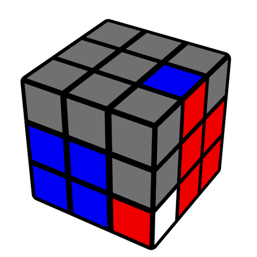
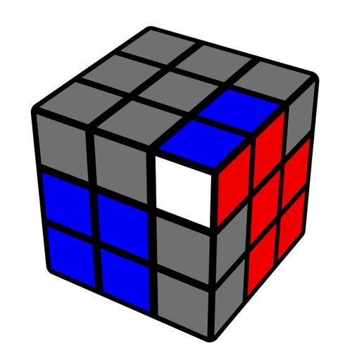
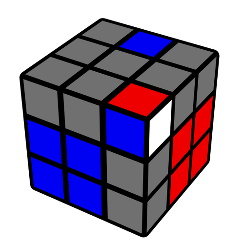

Welcome to the Basic F2L section of Cubing 101! Here, you'll find a step by step guide to solve any F2L case on the Rubik's Cube.
This procedure is intended for cubers who are new to F2L techniques and are looking to build a strong foundation. Even pros use these steps to solve F2L efficiently.
Before you move any of the pieces, you should locate the corner and edge pieces that form the F2L pair you want to solve. Your goal for this step is to get them both into the top layer, either using (R U R') or (L' U' L) if they're stuck between the centers like below.
Your next step is to position the pair into a 3-move insert. This is the hardest step of this process, so don't worry if you mess up. First, if the pieces are adjacent to each other (but not solved), then you would need to separate them. Then, you position them for a 3-move insert. A 3-move insert is just like what it says, a 3-move algorithm to insert the pair into its slot.
This is the step where you use the 3-move algorithm and insert the pair into its slot. There are 2 different 3-move insert algorithms, U R U' R' and R U R' (These algorithms can be mirrored as well). Simply perform the appropriate 3-move insert shown below depending on the position of the pair.
U R U' R'
R U R'
In order to be good at F2L, you must understand the basic patterns of pairing and inserting F2L pairs. These patterns can range from simple insertions like (R U' R') or taking cases that were long before and making them shorter by pairing the pieces more efficiently. This is a key thing you should focus and work on as you move forward. I recommend watching intuitive F2L videos to better understand these patterns.